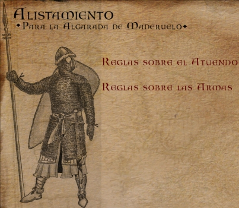
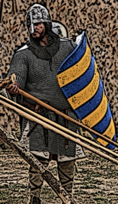
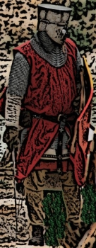
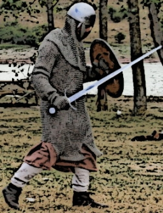
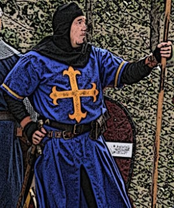
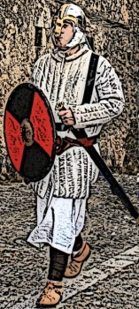
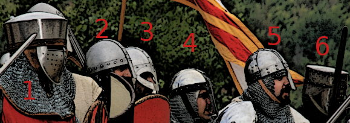

Alistamiento para la Algarada y Asalto a la Puerta
- 
- 
- 
- 

- 
- 
- 
viso para el alistamiento
En la Algarada se tratará de alinear juntos a los hombres de armas que pertenezcan a la misma hueste o mesnada. Por ello, aquellas personas que acudan englobados en un grupo, deberán solicitar su alistamiento colectivamente, según se detalla en el apartado acerca de la Leva de Mesnadas. Aquellos que pretenda alistarse individualmente deberán solicitarlo a la organización según se detalla en el apartado acerca de la Leva de Infantes
El listado provisional de admitidos se actualiza en esta web.
Leva de Mesnadas para el año 2012
- Basilio Cáceres
- Ataulfo Merino
- Miguel García Hernando
- Juan Carlos Lopez
- Juan Luis Carbón
- Jose Provencio
- Alberto Carnicero
- Rodrigo González
- Fernando de Gabriel
- Alberto Bomprezzi
- Jaime Quiles
- Daniel Fernández
- Fernando Romero
- Juan Carlos Llauradó
- Andrea Abad
- Santiago Bayo
- Cristophe Gaudoz
- Antonio Baciero
- Carlos Lorenzo
- Alberto Sanz
- Francisco Javier Cecilia
- Tito Blanco
- Mario López
- Jesús López
- Manuel Aguilar
- Oscar Torres
- Roberto Casas
- Pepe Luis Zaborras
- Alberto Rubio
- Julian Bermejo
- Ramón Gómez
- Diego de Tena
- el corcel Tristán
- Antonio Cano
- Rosendo Espinalt
- Verónica Lasala
- Ramón Valero
- Xavier Mas
- Aleix Basullas
- Oriol Marquínez
En esta edición, se informará a los capitanes o sargentos del plan de la batalla, así como los equipamientos mínimos requeridos. Serán ellos los que expliquen el plan y las reglas a sus gentes de armas, siendo responsables del comportamiento de sus gentes ante la organización.
Igualmente, la panoplia de armas queda limitada a espada, daga y escudo. El uso de flechas, mazas, hachas, lanzas, hondas, fustíbalos y otras armas enastadas será dispuesto arbitrariamente por la organización, segun lo requiera el guión de la batalla.
No obstante, la organización hará un último control en el propio campo de batalla para revisar las protecciones, armas y la adecuación histórica del atuendo. En esta página se han incluído algunos ejemplos ilustrativos.
Por ello, la organización se reserva el derecho de introducir cambios en el despliegue de las distintas facciones así como también se reserva el ejercicio del derecho de admisión en aras de la seguridad general o de la fidelidad histórica de esta evocación teatralizada de una algarada de la frontera castellana.
Para ediciones venideras, a tenor del comportamiento exhibido en el campo durante la batalla, se señalarán aquellos individuos o grupos poco gratos, lo cual pesará a la hora de ser admitido de nuevo.
Reglas para la Leva de Mesnadas
Aquel grupo interesado en alistarse para tomar parte en la Algarada deberá solicitarlo a la organización y deberá enviar un correo a msxii@maderuelo.com, con los siguientes datos:
- Nombre de la mesnada, hueste o compañía
- Seña o estandarte, si lo hubiere
- Sargento o Capitán
- Total de Hombres de armas de la Hueste
- nombre de cada participante: nombre y apellidos
- destreza de dada uno: ¿experiencia en esgrima, sea escénica o tradicional?
Por último, el responsable deberá recopilar estos datos y una fotografía reciente de cada hombre, vestido en armas, con calidad suficiente para juzgar su vestimenta y panoplia de armas.
Reglas para la Leva de infantes
Aquella persona interesado en alistarse para tomar parte en la Algarada del 2008 deberá solicitarlo a la organización y deberá aportar los siguientes datos:
- Nombre de participante: : nombre y apellidos
- destreza de dada uno: ¿experiencia en esgrima, sea escénica o tradicional?
Además debe mostrar una fotografía reciente, vestido en armas, con calidad suficiente para juzgar su equipamiento, vestimenta, protecciones y panoplia de armas
Todo ello, se debe remitir por correo electrónico a msxii@maderuelo.com
Nuestras sugerencias para mejorar el atavío
Continuamente nos llegan preguntas de gentes interesadas en participar en la Algarada sobre cómo vestir adecuadamente. En la sección Guerreros mostramos algunas ideas.
También hemos adjuntado imágenes de algunos participantes reales, a las que añadimos algunos comentarios ilustrativos de su adecuación o no.
Vaya por delante nuestras disculpas si alguién se considera aludido ya que no se pretende hacer una crítica personal si no aprovechar una imagen en la que aparezcan detalles dignos de ser resaltados.